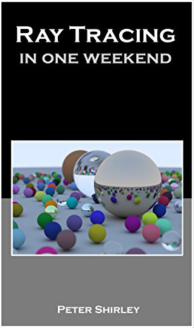
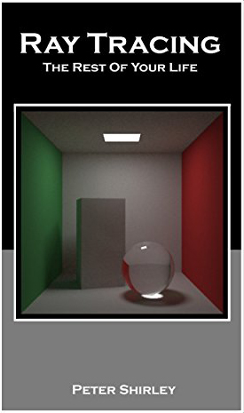
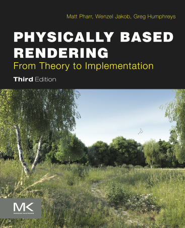

Syllabus
Contents
Fall 2021 - Dartmouth College – Prof. Wojciech Jarosz
How are the photorealistic images in animated films, visual effects, or architectural pre-visualization created?
This class focuses on advanced 3D graphics techniques for realistic image synthesis. You will learn how light interacts with objects in the real world, and how to translate the underlying math and physics into practical algorithms for rendering photorealistic images.
Prerequisites
- COSC 70,
- COSC 50,
- or instructor's permission
We will rely on calculus, linear algebra and use basic concepts of algorithms and data structures. Students are expected to be familiar with the C++ programming language that we'll use in the programming assignments. Graduate students should have taken a course in multi-variable calculus equivalent to MATH 8.
Administrative details
Lecture location
TBD
Class times
- Lecture: MWF 10:10am – 11:15am
- X-hour: Thursday 12:15pm–1:10pm
Course staff
Professor : Wojciech Jarosz
TA : Shaojie Jiao
Coursework
This is a project-based course, and the majority of your grade will come from programming assignments, which you'll find in the Assignments section of the website. There will also be in-class hand-written quizzes and/or an exam. I will post slides online after lecture.
For the programming assignments, you will initially receive a very basic ray tracing framework, darts, that lacks most rendering-related functionality. As we discuss various concepts in class (the physics of light, how light interacts with surfaces and volumes, the Monte Carlo method and sampling), you will apply that knowledge in a series of programming assignments, implementing increasingly sophisticated rendering algorithms in your own software.
By the end of the quarter your software will have a basic set of features allowing you to create simple photorealistic images by simulating the physics of light in a virtual scene. In the last programming assignment you will implement a set of additional features of your own choosing and create a photorealistic image that is both technically and artistically compelling.
Textbooks
Beyond lecture material, we will rely on four books in this class:
|  |  |  |
Luckily, all of these books are available for free online (just click on the book covers above).
The first few weeks and assignments will largely mirror the concepts in Peter Shirley's excellent and very accessible Ray Tracing series of 3 mini e-books. These books are short, fun and informal – more like blog posts than textbooks – and are a great way to get started on this exciting topic. We will sometimes refer to these as Shirley1, Shirley2, and Shirley3.
As the quarter progresses, we will introduce more and more concepts from Physically Based Rendering, Third Edition: From Theory To Implementation by Matt Pharr, Wenzel Jakob, and Greg Humphreys. This is a big (sometimes intimidating) textbook, with all the mathematical details you will need to dive deeply into the rendering topic of this class. We will use this mostly as a reference to complement the Shirley mini-books.
Our hope is that this combination will get you started making images quickly, but by building off the darts basecode, and following the design suggestions we incorporate from PBR, you will end up with a much more general and full-featured render than the one in Shirley's books alone.
There will be reading from these book each week to supplement the material discussed in lecture. I list the relevant reading in the description of the corresponding lecture event in the Canvas calendar, as well as in our class Schedule.
Learning Outcomes
By the end of the course, you will be able to:
- Explain the physical quantities of light transport and perform basic computations using pencil & paper
- Explain a variety of models describing how light interacts with different materials
- Explain the rendering and radiative transfer equations and show how to construct Monte Carlo methods to solve them
- Design and implement an advanced rendering system based on Monte Carlo integration
- Assess / evaluate the strengths, weakness, and capabilities of various rendering algorithms
Grading Scheme
| Grading Component | Percentage |
|---|---|
| Programming assignments | 50% |
| Exam(s)/Quizzes: | 25% |
| Final project: | 20% |
| Participation | 5% |
I will be following an absolute grading policy for assigning a letter grade in this course:
| Grade | Percentage |
|---|---|
| A | final score ≥ 97% |
| A- | 97% > final score ≥ 90% |
| B+ | 90% > final score ≥ 87% |
| B | 87% > final score ≥ 84% |
| B- | 84% > final score ≥ 80% |
| C+ | 80% > final score ≥ 77% |
| C | 77% > final score ≥ 74% |
| C- | 74% > final score ≥ 70% |
| D | 70% > final score ≥ 60% |
| E | 61% > final score |
Graduate & Extra Credit
The undergraduate (87) and graduate (287) sections of this class will be graded separately and we will generally grade graduate students more strictly. For graduates enrolled in 287, I will convert an A to High Pass (HP) and B- or above to Pass (P). Low Pass (LP) starts at C+, and anything D or below receives No Credit (NC).
Some of the assignments will denote work that is required only for graduates, and often, these portions may count as extra credit for undergraduates enrolled in 87. Occasionally we will include the possibility to earn “Hacker Points”: these are “underpriced” extra credit points for the daring few (available to both undergraduates and graduates). Sometimes this might require implementing something that was not taught in class or something that requires some additional research and creative thinking. Hacker Points are either fully awarded or not awarded at all.
Extra credit in this course will be tallied separately from regular scores and will only be granted if the foundation of the original assignment has been completed correctly (e.g., at least 90% of the original requirements/grade are met). If you end up on a borderline between two grades at the end of the course, extra credit will count in your favor. Failure to do extra credit will never be counted against you. You should do extra credit work if you find it interesting and think that it might teach you something. It never pays to skimp on the regular assignments in order to do extra credit problems.
Submission Deadlines & Grading
You will turn in a link to your code through Canvas, and we will have a strict deadline. We will strive to post programming assignment grades on Canvas within roughly a week of the due date. The assignments will build off of one another, so you do not want to fall behind! There is a stiff penalty for late submissions, as discussed in the first lecture. Exception to this rule might be made for special cases only if you let the professor know well before (e.g. not a couple days before) the deadline, or in the case of a medical emergency, and at the professor’s sole discretion.
It’s up to you to check that assignments have been successfully submitted to Canvas; if there are any problems, you must notify course staff by email immediately (not weeks later, claiming “Canvas ate it”).
Rendering Competition
The class culminates with a final project and rendering competition. The purpose of the final project is to add additional advanced features to your rendering software and compete with your classmates to generate the most photorealistic image. Each student will choose an motivational image/scene which they would like to recreate virtually using their software, and must implement the necessary features to achieve their artistic vision. Students will briefly present their final projects during the final exam period to a panel of expert judges, who will evaluate the entries both in terms of technical achievement and artistic quality.
For inspiration, take a look at the rendering competition results from prior iterations of this course, or similar courses at other universities:
Policies
Honor Principle and permissible sources of information
If you are not already, you should familiarize yourself with Dartmouth's policies on the Academic Honor Principle, and Proper Citation of Sources.
In short: You are welcome and encouraged to chat about assignments with other students in general terms, but code must be written on your own.
I assume the work you hand in is your own, and the results you hand in are generated by your program. You’re welcome to read whatever you want to learn what you need to complete the work, but I do expect you to build your own implementations of the methods we are studying.
Undeclared copying of code or images (either from other students or from external sources) is strictly prohibited! I take this very seriously! If you violate this rule, you not only risk a failing grade on the assignment or entire course, I’m required to report the case to the Dartmouth Office of Judicial Affairs, resulting in a lot of wasted time, a COS hearing, and possible suspension or even explusion from the College. Don’t do it. We know how to use Google and will use automated tools to check for similarity in solutions between students (past or present) and to other sources available online. The goal of the class is to learn and have fun. Let’s keep it that way.
If you’re ever in doubt, just include a citation in your code and report indicating where some idea came from, whether it be a classmate, a website, another piece of software, or anything – this always maintains your honesty, whether the source was used in a good way or not. The same basic principle applies to your presentations. Any material you reuse from outside sources must be properly attributed.
Over the years we have developed and refined a number of homework and exam problems, and I plan to reuse some of them for this class. You should not look at any solutions to such problems assigned in previous terms, including sample solutions, or solutions written by other students.
COVID-19 Information
Health addendum
While the COVID-19 pandemic has already drastically disrupted this course, it has the potential to result in further personal impact which may prevent you from continuing engagement in the class. This may be due to contraction of the disease by you or a loved one, increased familial responsibilities, financial difficulties, or impacts on your mental/emotional health.
I have structured the course so that, hopefully, these disruptions will not prevent you from successfully learning the material.
In the event that you are directly or indirectly impacted by COVID-19 in such a way that will affect your performance in the course, it is imperative that you reach out to the instructor(s) as soon as possible. You may also reach out to your undergraduate Dean if that would make you more comfortable. We cannot assist you if we don’t know there is a problem. Our first priority is your health and security. We will work to put you in touch with appropriate resources to assist you.
Attendance
You are expected to attend class in person unless you have made alternative arrangements due to illness, medical reasons, or the need to isolate due to COVID-19. For the health and safety of our class community, please: do not attend class when you are sick, nor when you have been instructed by Student Health Services to stay home.
I will try to record all of our lectures that occur at the scheduled time, so that those who cannot be there due to COVID circumstances can watch later.
Safety
In accordance with current College policy, all members of the Dartmouth community are required to wear a suitable face covering when indoors, regardless of vaccination status. This includes our classroom and other course-related locations, such as labs, studios, and office hours. If you need to take a quick drink during class, please dip your mask briefly for each sip. Eating is never permitted in the classroom. (The only exception to the mask requirement is for students with an approved disability-related accommodation; see below.) If you do not have an accommodation and refuse to comply with masking or other safety protocols, I am obligated to assure that the Covid health and safety standards are followed, and you will be asked to leave the classroom. You remain subject to course attendance policies, and dismissal from class will result in an unexcused absence. If you refuse to comply with masking or other safety protocols, and to ensure the health and safety of our community, I am obligated to report you to the Dean’s office for disciplinary action under Dartmouth’s Standards of Conduct. Additional COVID-19 protocols may emerge. Pay attention to emails from the senior administrators at the College.
I will communicate any changes and their resulting implications for our class community.
Consent to recording
Dartmouth has asked that I include the following language describing some bounds on how recording should be used. You do not need to send me any sort of agreement on this – it just makes clear that you shouldn’t record or distribute any recordings without my consent.
The remainder is standard text provided by Dartmouth [here].
- Consent to recording of course meetings and office hours that are open to multiple students. By enrolling in this course,
- I affirm my understanding that the instructor may record meetings of this course and any associated meetings open to multiple students and the instructor, including but not limited to scheduled and ad hoc office hours and other consultations, within any digital platform, including those used to offer remote instruction for this course.
- I further affirm that the instructor owns the copyright to their instructional materials, of which these recordings constitute a part, and my distribution of any of these recordings in whole or in part to any person or entity other than other members of the class without prior written consent of the instructor may be subject to discipline by Dartmouth up to and including separation from Dartmouth.
Requirement of consent to one-on-one recordings
By enrolling in this course, I hereby affirm that I will not make a recording in any medium of any one-on-one meeting with the instructor or another member of the class or group of members of the class without obtaining the prior written consent of all those participating, and I understand that if I violate this prohibition, I will be subject to discipline by Dartmouth up to and including separation from Dartmouth, as well as any other civil or criminal penalties under applicable law. I understand that an exception to this consent applies to accommodations approved by SAS for a student's disability, and that one or more students in a class may record class lectures, discussions, lab sessions, and review sessions and take pictures of essential information, and/or be provided class notes for personal study use only.
If you have questions, please contact the Office of the Dean of the Faculty of Arts and Sciences.
Accommodations
Students requesting disability-related accommodations and services for this course are required to register with Student Accessibility Services (SAS; Getting Started with SAS webpage; student.accessibility.services@dartmouth.edu; 1-603-646-9900) and to request that an accommodation email be sent to me in advance of the need for an accommodation. Then, students should schedule a follow-up meeting with me to determine relevant details such as what role SAS or its Testing Center may play in accommodation implementation. This process works best for everyone when completed as early in the quarter as possible. If students have questions about whether they are eligible for accommodations or have concerns about the implementation of their accommodations, they should contact the SAS office. All inquiries and discussions will remain confidential.
Mental Health and Awareness
The following is standard text provided by Dartmouth [here].
The academic environment at Dartmouth is challenging, our terms are intensive, and classes are not the only demanding part of your life. There are a number of resources available to you on campus to support your wellness, including your undergraduate dean, Counseling and Human Development, and the Student Wellness Center. I encourage you to use these resources to take care of yourself throughout the term, and to come speak to me if you experience any difficulties.
Respect, Diversity, and Inclusion
I would like to create a learning environment for my students that supports a diversity of thoughts, perspectives and experiences, and honors your identities (including race, gender, class, sexuality, religion, ability, etc.). To help accomplish this:
If you have a name and/or set of pronouns that differ from those that appear in your official college records, please include them in DartHub or let me know privately.
If at any time you feel uncomfortable about the interactions in our classroom I encourage you to contact me privately so I can better understand how I can manage the course; indeed, I am eager for feedback about how I can maximize everyone’s experience. If you feel like your performance in the class is being impacted by your experiences outside of class, likewise, please don’t hesitate to contact me. I want to be a resource for you. If you prefer to speak with someone outside of the course, the contacts in the Mental Health and Wellness section above can be an excellent resource.
I (like many people) am constantly learning about diverse perspectives and identities. If something was said in class (by anyone) that made you feel uncomfortable, please talk to me about it.
As a participant in course discussions, you should also strive to honor and respect the diversity of your classmates.
Title IX
The following is standard text provided by Dartmouth [here].
At Dartmouth, we value integrity, responsibility, and respect for the rights and interests of others, all central to our Principles of Community. We are dedicated to establishing and maintaining a safe and inclusive campus where all have equal access to the educational and employment opportunities Dartmouth offers. We strive to promote an environment of sexual respect, safety, and well-being. In its policies and standards, Dartmouth demonstrates unequivocally that sexual assault, gender-based harassment, domestic violence, dating violence, and stalking are not tolerated in our community.
The Sexual Respect Website at Dartmouth provides a wealth of information on your rights with regard to sexual respect and resources that are available to all in our community.
Please note that, as a faculty member, I am obligated to share disclosures regarding conduct under Title IX with Dartmouth's Title IX Coordinator. Confidential resources are also available, and include licensed medical or counseling professionals (e.g., a licensed psychologist), staff members of organizations recognized as rape crisis centers under state law (such as WISE), and ordained clergy (see https://dartgo.org/titleix_
resources). Should you have any questions, please feel free to contact Dartmouth's Title IX Coordinator or the Deputy Title IX Coordinator for the Guarini School. Their contact information can be found on the sexual respect website.